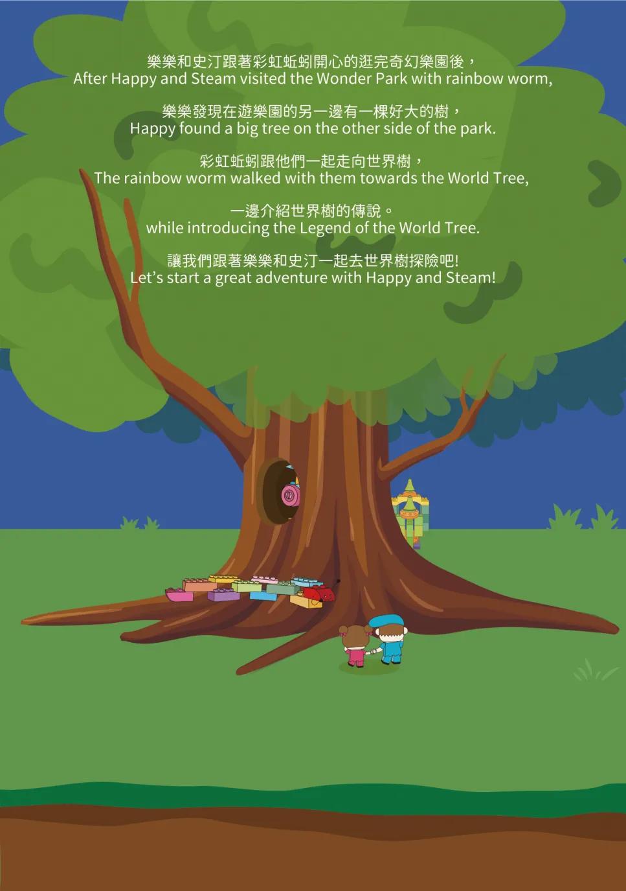
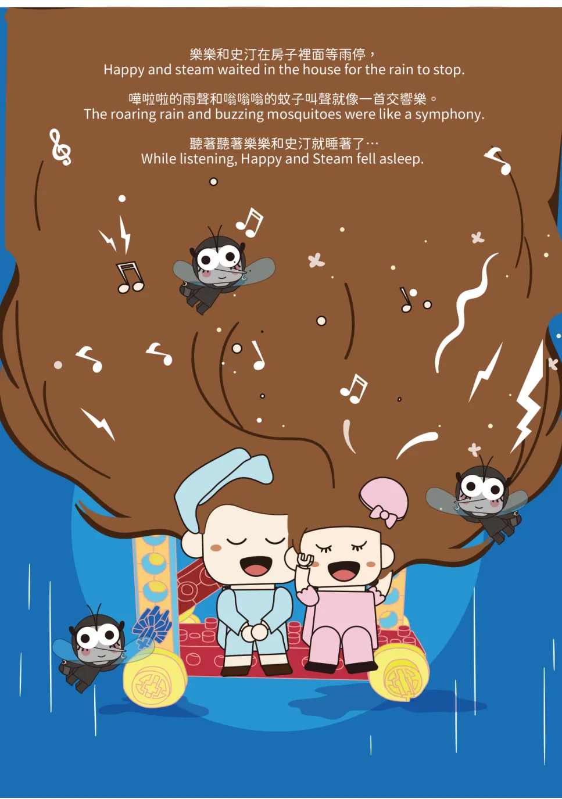
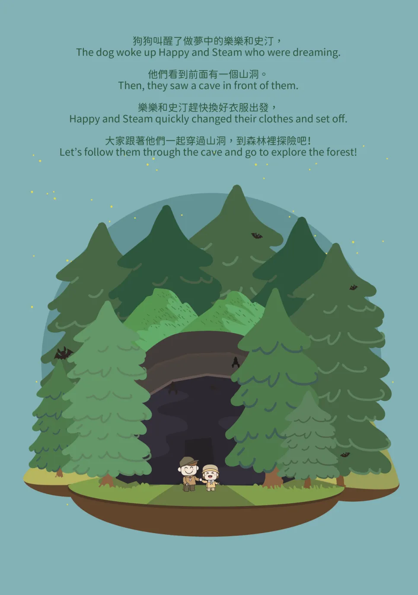

小班・第 1 本試讀本
史汀和樂樂搭上太空船出發，在積木星球尋寶、認識積木人，一路玩到足球場和販賣部。
10 個單元
- 尋寶去
- 積木人
- 小丑蹺蹺板
- 轉轉陀螺
- 軌道滑行車
- 搖擺城堡
- 滑雪人
- 足球守門員
- 抽獎機
- 販賣部
繪本試讀
上課用的是教室自己畫的雙語繪本：先聽故事、看今天的任務，再動手把故事裡的東西做出來。
小班
中班
史汀和樂樂搭上太空船出發，在積木星球尋寶、認識積木人，一路玩到足球場和販賣部。
10 個單元
積木人說，積木山上有個通往地底世界的神秘入口。史汀和樂樂背起背包，坐飛機、搭電梯、跳上海盜船，一路冒險到地心。
10 個單元
這本在課堂上才看得到，先翻翻同年級的試讀本吧！
彩色蚯蚓帶史汀和樂樂去牠最愛的奇幻樂園，看小熊跳舞、兔子變魔術、袋鼠打拳擊，最後和北極熊一起釣魚。
10 個單元
這本在課堂上才看得到，先翻翻同年級的試讀本吧！
傳說爬到世界樹頂端就能許願。史汀和樂樂一層一層闖關，幫鋼鐵人、跟瓢蟲打鼓、開蜘蛛消防車，最後扭出一顆許願石。
10 個單元
這本在課堂上才看得到，先翻翻同年級的試讀本吧！

許願石送史汀和樂樂回家了！他們在家烤肉串、修剪大樹、睡上下舖，還開小汽車出門，認識了新朋友機器人。
10 個單元
下雨天，史汀和樂樂聽著雨聲睡著了。夢裡有蚊子啦啦隊、怪獸遊樂園、小火車和旋轉木馬，醒來才發現是一場夢。
10 個單元
這本在課堂上才看得到，先翻翻同年級的試讀本吧！

狗狗叫醒了史汀和樂樂，他們換上探險裝穿過山洞，在森林裡遇到會飛的小豬，坐風帆車出海、開車爬上懸崖。
10 個單元
這本在課堂上才看得到，先翻翻同年級的試讀本吧！

3 歲起就有 ESM 幼兒啟蒙，6 歲 SPM、7 歲 VEX GO，之後一路銜接到高中。
小班制，一班最多 10 人。
不用，上課一人一套教具，不必跟別人共用。
可以，請假後安排補課。
有比賽專班：VEX、FIRST、WRO。VEX IQ／V5 競賽班每年 6 月底開班。看比賽專班